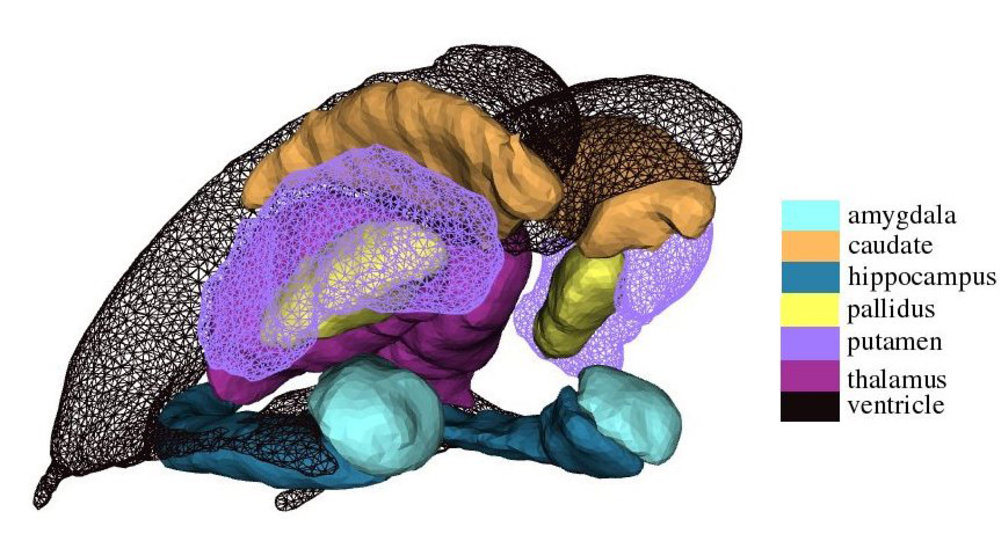
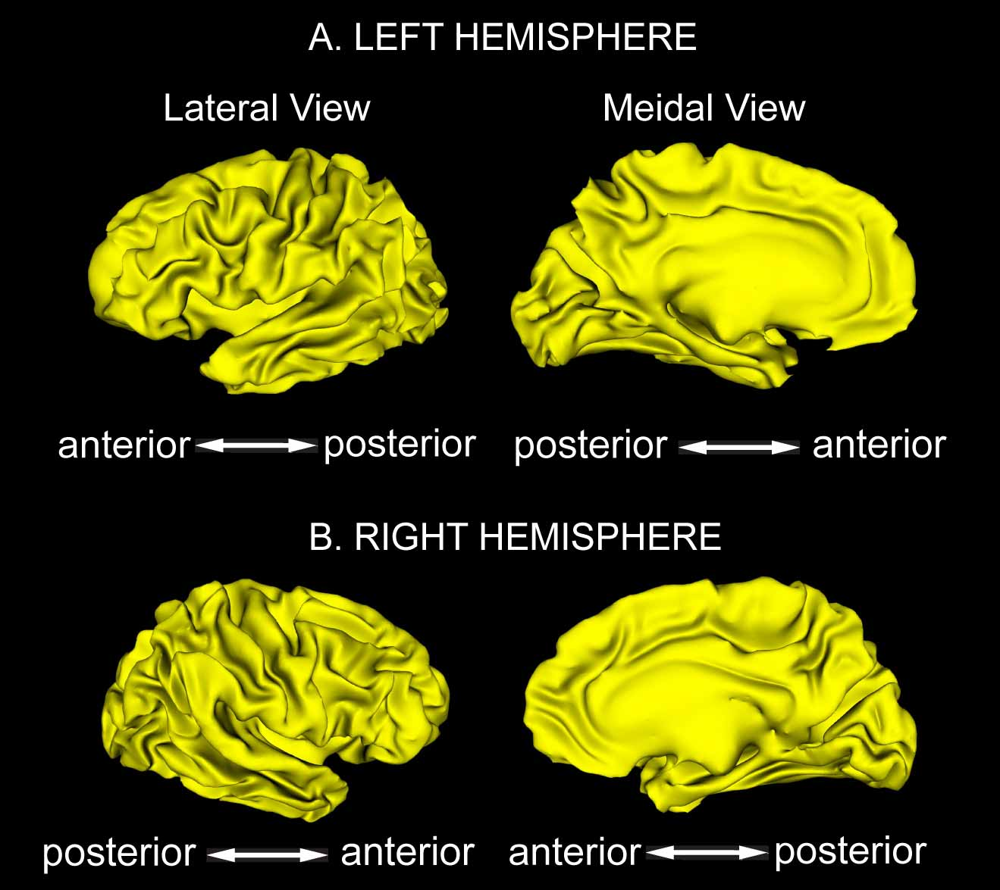

Laboratory For Medical Image Data Sciences
Brain Atlas Database
Brain warping techniques have made it possible to compare anatomical structure and function of the brain in large populations. Most of these techniques are atlas-based approaches that have been successful in describing anatomical variations between a collection of anatomies and an atlas. The atlas is often represented by a healthy control subject from the population being studied. The difficulties with this approach are that the template may not be truly representative of the population, particularly when severe neurodegenerate disorders or brain development are studied. Wide variation of the anatomy across subjects relative to the template may cause the failure of the mapping. Thus, one of the fundamental limitations of choosing the anatomy of a single subject as an atlas is the introduction of a statistical bias based on the arbitrary choice of the atlas anatomy. In this database, we provide representative shapes of a variety of structures that were constructed from different populations using large deformation diffeomorphic metric template estimation procedure (Qiu, A., IEEE transactions on Image Processing, 2010, and Zhong, J., NeuroImage, 2010) .

Figure 1.subcortical shape atlas
The subcortical shape atlas includes lateral and inferior lateral ventricles as well as six subcortical structures (amygdala, hippocampus, thalamus, caudate, putamen, globus pallidus in both volume and surface representations. This set of the shapes were generated from manual labeled volumes of forty one subject using the large deformation diffeomorphic metric template estimation (Qiu, A., IEEE transactions on Image Processing, 2010) . These subjects were selected based on demographic information (gender, age, and diagnosis) from the database of Open Access Series of Imaging Studies (OASIS, http://www.oasis-brains.org) , including ten young adults (4 males and 6 females, age: 21.3 ± 1.57) , ten middle aged adults (5 males and 5 females, age: 49.8 ± 5.79) , ten elders (5 males and 5 females, age: 73.6 ±7.05) , and eleven patients with dementia (5 males and 6 females, age: 77.2±5.64) . All imaging was conducted at 1.5 T (Siemens Vision scanner, Erlangen -Germany) . Head movement was minimized by cushioning and a thermoplastic face mask. Three or four T1- weighted MP-RAGE scans were acquired in each subject. MP-RAGE parameters were empirically optimized for gray–white contrast [TR =9.7 ms, TE = 4 ms, flip angle = 10 degrees, inversion time (TI) = 20ms, delay time (TD)> = 200 ms, 256 X 256 (1 X 1 mm) in-plane resolution, one hundred twenty-eight 1.25-mm slices without gaps] . The MP-RAGE data were averaged offline (with correction for head movement) to increase the contrast to noise ratio in all procedures involving manual tracing, segmentation, and measurement of normalized whole brain volume and were interpolated into isotropic voxels with resolution of 1mm X 1mm X 1mm. The anatomical definition of each structure follows the one in FreeSurfer. The manual labeled subcortical volumes were also used to create a probabilistic atlas for automatic subcortical segmentation in FreeSurfer. The detailed template generation procedure is described in Qiu, A., et. al. IEEE transactions on Image Processing, 2010.
REFERENCES:
Anqi Qiu, Timothy Brown, Bruce Fischl, Jun Ma, Michael I. Miller, “Atlas Generation of Subcortical and Ventricular Structures with its Applications in Shape Analysis”, IEEE transactions on Image Processing, accepted.

Figure 2. cortical surface atlas
The cortical surface atlas includes the left and right cortical hemispheric surfaces and 14 sulcal and 12 gyral curves of each side. We estimated the template of the cortical surface and the curves from 40 subjects using multi-manifold large deformation diffeomorphic metric mapping (MM-LDDMM). These subjects with ten youths (5 males and 5 females, age: 23.4±2.55), ten adults (5 males and 5 females, age: 49.3±1.89), ten elders (5 males and 5 females, age: 73.9±2.02), and ten patients with dementia (5 males and 5 females, age: 76.4±2.55) were randomly selected based on gender, age, and diagnosis from the public available dataset of Open Access Series of Imaging Studies (OASIS). All imaging was conducted at 1.5 T (Siemens Vision scanner, Erlangen -Germany). Head movement was minimized by cushioning and a thermoplastic face mask. Three or four T1- weighted MP-RAGE scans were acquired in each subject. MP-RAGE parameters were empirically optimized for gray–white contrast [TR =9.7 ms, TE = 4 ms, flip angle = 10 degrees, inversion time (TI) = 20ms, delay time (TD) = 200 ms, 256 X 256 (1 X 1 mm) in-plane resolution, one hundred twenty-eight 1.25-mm slices without gaps]. The MP-RAGE data were averaged offline (with correction for head movement) to increase the contrast to noise ratio in all procedures involving manual tracing, segmentation, and measurement of normalized whole brain volume and were interpolated into isotropic voxels with resolution of 1mm X 1mm X 1mm. The detailed template generation procedure is described in (Zhong and Qiu, A., NeuroImage, 2010)
>REFERENCES:
Jidan Zhong, Anqi Qiu, “Multi-Manifold Diffeomorphic Metric Mapping for Aligning Cortical Hemispheric Surfaces”, NeuroImage, 49 (1) :355-65, 2010.